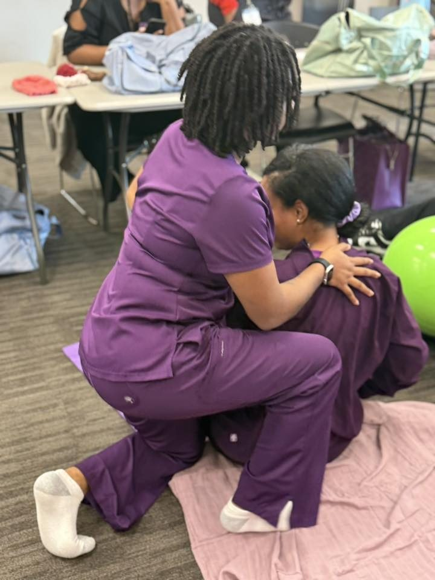
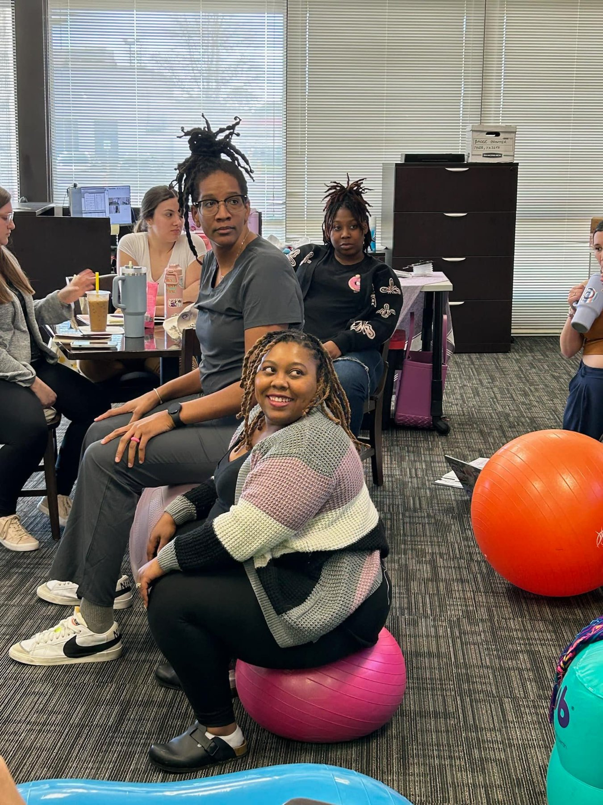
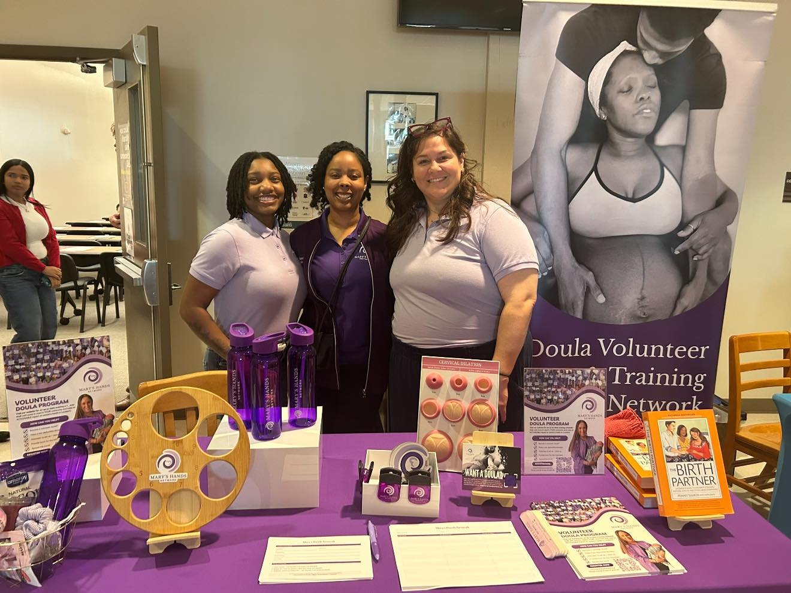
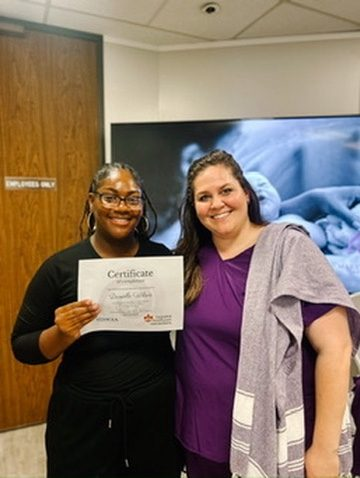
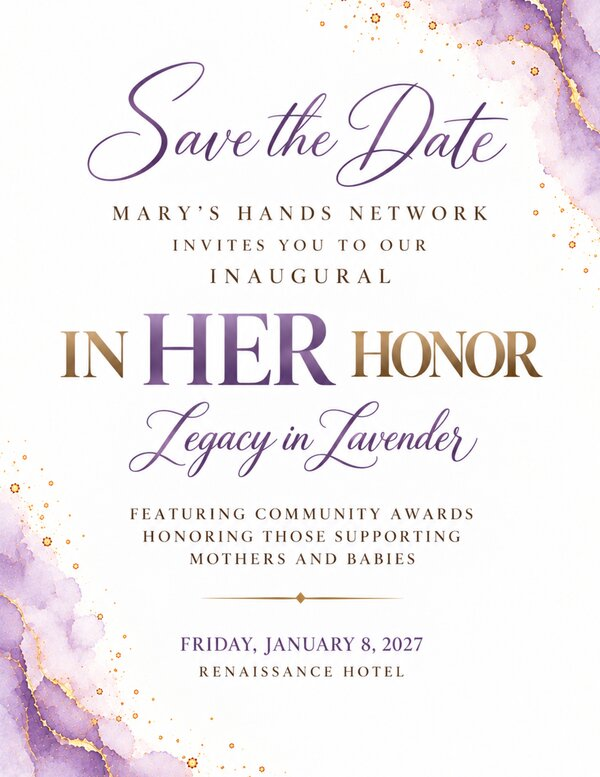
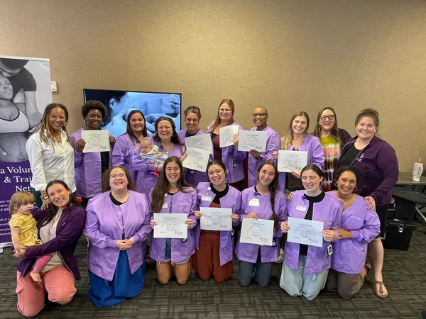
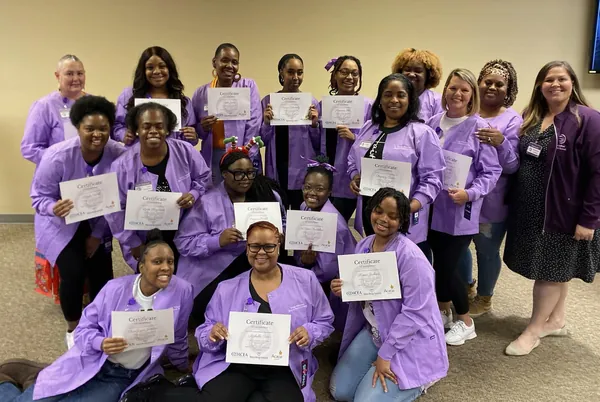
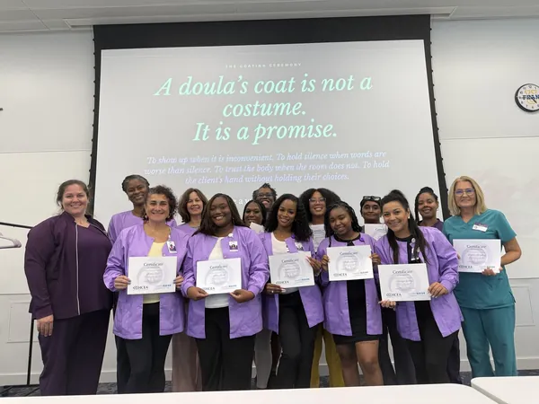
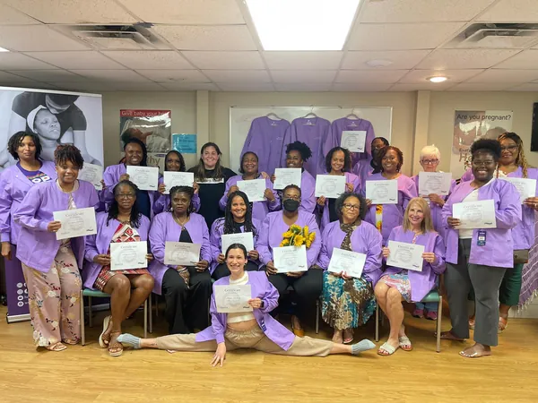

Every birth deserves a doula.
Our mission is to empower families, promote birth excellence, and bridge the health equity gap in our community.



Find your place in the network.

Families
Apply for a free volunteer doula to support you through labor, birth, and the first eight weeks postpartum. Application takes 15 minutes.
Start your application
Birth workers
Become part of the largest volunteer doula network in Louisiana and help change maternal health outcomes in your community. Apply now to join our next ICEA-certified cohort.
Apply to join the network
Community supporters
$500 funds a birth. $2,000 funds a training seat. Or sponsor our January 8 gala. Every gift is tax-deductible and goes to a specific line item we can show you.
See ways to giveTraining and gala dates.

Become a volunteer birth doula.
ICEA-approved training. Four live evenings online + one in-person Saturday in Baton Rouge. Scholarships funded by Louisiana Blue Foundation and Love One Louisiana Foundation. Scholarship applications close Jan 10; course registration closes Jan 29.

An evening in her honor.
In Her Honor: A Legacy in Lavender
Renaissance Hotel, 7000 Bluebonnet Blvd, Baton Rouge, LA. An evening in honor of the women of our community, and the people who have shown up for them.
 Gala title sponsor: My Bump Hub
Gala title sponsor: My Bump Hub
Someone in your corner, trained to walk with you through pregnancy, birth, and the early postpartum weeks.
A doula is a non-clinical support person who stays beside you during labor and the days afterward. Doulas don’t replace nurses, midwives, or doctors. They sit alongside the medical team and make sure you have a steady hand, a familiar voice, and answers to your questions when you need them.
Doulas do
- Continuous emotional support through pregnancy, labor, and the early weeks
- Physical comfort measures: counter-pressure, hip squeezes, rebozo, birth ball, hands-and-knees positioning
- Evidence-based information so you can make informed choices about your care
- Stay through transitions: nurses change shifts; your doula does not
- Help you advocate with your medical team by translating your hopes into clear questions
- Non-pharmacological pain support: breath, movement, water, music, touch
Doulas do not
- Diagnose or treat medical conditions
- Perform clinical assessments like vitals, vaginal exams, or fetal monitoring
- Prescribe or administer any medications
- Override the decisions of nurses, midwives, or doctors
- Give medical advice. That responsibility belongs to your medical team.
- Replace your medical providers in any way
Fewer cesareans. Fewer preterm births.
For families served by Mary’s Hands Network, our IRB-tracked outcomes show a cesarean rate of less than 15% versus 36.1% in Louisiana and a preterm birth rate of 4% versus 13% in Louisiana (71% fewer).
Continuous, culturally humble doula support is one of the most evidence-backed interventions in maternal health, and we believe it should be free for any family who wants it.
Three pillars, one mission.
Family Support
Free doula care, education, and community gatherings for the families we serve.
- Free doula care for any Louisiana mother who applies
- 24/7 Doula Hotline at (225) 424-7532
- Bereavement support for loss families
- Bilingual support, apoyo en español
- Community baby showers and resource distribution
- Prenatal, postpartum, and parenting classes (coming 2027)
Workforce Development
Training the birth workers who serve our communities, to ICEA and MHN standards.
- ICEA-approved doula training, 285 doulas trained since 2023
- Postpartum doula training
- Bereavement specialty training
- Customized industry trainings to ICEA and MHN standards
- Spanish-language doula training (sponsor-supported)
- Ongoing professional development for active volunteers
Community Impact
At community events, in policy rooms, and in the outcomes data.
- IRB-approved outcomes research with Baton Rouge General
- Cesarean rate less than 15% vs. Louisiana 36.1%
- Preterm birth rate 4% vs. Louisiana 13% (71% fewer)
- Outreach and tabling at community events
- Policy and advocacy participation
- Resource distribution to families in need
Nineteen cohorts and counting.
Every doula in our network is trained alongside their cohort, then certified to serve Louisiana families.






Our partners.
The hospitals, foundations, and statewide organizations who make our work possible.